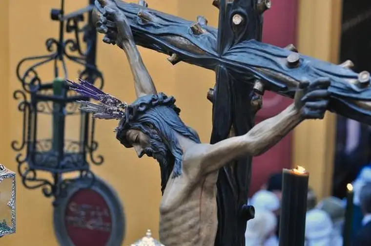
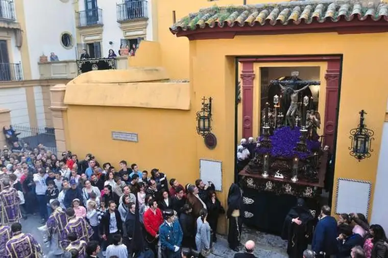
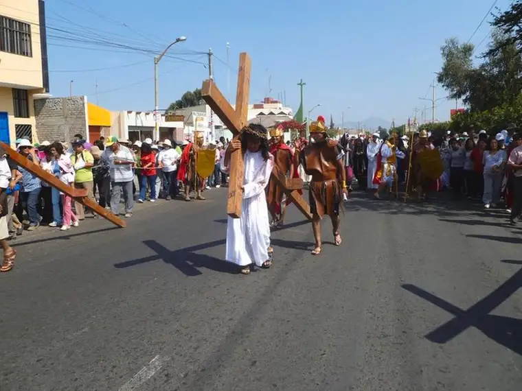

MOORHEAD — Every year around this time, Francisco Cabello-Cobo begins to feel a soulful yearning for his hometown near Seville, Spain.
“I believe there’s sort of an animal cycle to people’s lives and certain rituals that you go through in any given year,” he says, noting these customs are necessary to keep the psyche healthy. “For me, it’s Easter … I count the years from Holy Week to Holy Week.”
The aching triggered for Cabello-Cobo this pivotal time in the Christian calendar has everything to do with the weeklong processions that move through the streets of Seville in all their grandeur.
Organized by confraternities connected to the church, they begin with prayer at individual parishes and end at the cathedral, often many hours later.

Each include man-held floats bearing wooden statues depicting the Passion of Christ and the Virgin Mary, but themes and tone vary.Some are lavish, Cabello-Cobo says, with displays of gold and silver, candles and embroidery. People in eateries along the way emerge as the processions pass, and often, jubilant parties break out in the streets.
Others bring solemn and quiet. There may be spiritual dramatizations and pauses for “saeta,” an ancient Spanish song connected to the recitation of the Psalms, known for its mournful quality.
“It’s a deep flamenco song, addressed to the Christ or the mother, so when someone shows up on a balcony and begins to sing, everyone quiets down and listens,” Cabello-Cobo says. “It’s very emotional.”
Though a religious occasion for some, Holy Week is just as much an experience of community bonding, Cabello-Cobo says, adding that when he’s able to return home for the occasion, “I connect with my culture on a deeper level than you could on vacation at a beach in Hawaii.”
In the Netherlands where Hilda Koster grew up in a rural town of 6,000, attending the Calvinist-based Netherlands Reformed Church, Easter centered on the Resurrection, along with tulips, eggs and bonfires.
Koster, a religion professor at Concordia College, says religious traditions, often mixed with pagan customs, have fewer traces of religion now with secularism’s pervasive influence.
For most, she says, the “holiday” today means two days off from work, with, curiously, a common activity of furniture-shopping.
But her childhood Easters included church services, along with gathering beforehand with neighbors in the family’s garage to decorate boiled eggs, and an Easter feast where “everyone has a painted egg with a face on it.”
In some homes, egg-eating contests involving contenders stuffing down “as many eggs as they could possibly eat” took place. “This always struck me as odd,” Koster says. “My family didn’t do it, but it was big in farmers’ families.”
After “First Easter Day”—traditional Easter—a “second Easter” takes place and includes “a lot of local traditions people take very seriously,” like gigantic, community bonfires. As a teenager, Koster and her friends found the bonfires an ideal place to raise money selling hot chocolate for their youth group.
“Easter does coincide with spring there,” Koster says. “So it’s often the time when the tulips are coming out, and that total sense that everything is coming to life again.”
Interestingly, she adds, the Dutch have been known to gift the pope with tulips at Easter time.
Despite cultural and country variances, Easter celebrations around the world seem to have two common themes: food and family.
Back home in Kenya as a little girl, Faith Ngunjiri, who directs Concordia’s Lorentzsen Center for Faith and Work, says Easter meant “tremendous celebration, and an opportunity for families to get together around food and fun.”
“Folks are likely to go to church on both Good Friday and Sunday, and between the two church services is a lot of celebration,” she shares by email.
Those living in cities often travel “upcountry” to their village homes where extended families gather to celebrate the holiday, she adds, noting that foods like “chapati,” a flatbread, along with Nyama Choma, “roasted meat,” and “various kinds of starchy foods” are enjoyed.
“Even folks who may not frequent church are likely to end up in church for the Easter celebrations,” she says. “That is what I remember and miss about Easter in Kenya — getting to hang around with all the aunties and uncles and cousins and grandparents.”
Luiz Manzoni, a native of Brazil, also remembers food the most — chocolate eggs that parents would hide for the kids to find, and an Easter meal featuring salted codfish.

In Peru, a simple biblical commemoration is taking place this week in the dusty streets of Chimbote.
Tom Mickelson, 22, who spent Holy Week 2015 there as a volunteer of the Friends of Chimbote mission organization founded by the Rev. Jack Davis, formerly of Fargo, says Easter in Chimbote was a wholly different experience.
It all began on Palm Sunday with a procession that wound through the barrios, led by a priest on a donkey and people carrying palm branches, knocking on doors, announcing in Spanish, “Jesus is coming! It’s time to go to Mass.”
Though the readings were the same as always, Mickelson says, the atmosphere differed, with an upbeat band that had everyone singing and clapping. “There were dogs walking in and out of the church, and you could hear the taxis honking outside. It was more lively; it had its own energy.”
The rest of the week included a service for the disabled, Reconciliation, and a Chrism Mass where holy oils were blessed at the cathedral in New Chimbote, and priest-martyrs killed by the Shining Path terrorist group in 1991 were honored.
A foot-washing at the Thursday service bore parallels to Jesus’ day, according to Mickelson, given the unpaved roads and other poor living conditions. “Not everyone wears shoes; they don’t necessarily even wash their feet every day.”
Finally, on Easter, the service began at 3:30 a.m., with an outdoor Mass in the dark and the opening of a sepulcher representing the tomb in which Jesus was buried, which later was discovered empty. “There was cloth stapled to wood and painted, and it showed burial garments and an empty tomb.”
And then, just as the service was ending, the sun rose, as if on cue.
“It was awesome,” Mickelson says, noting that the daily prayer and service work he did there made him feel spiritually alive. “I don’t think Easter here could ever compare.”
[For the sake of having a repository for my newspaper columns and articles, I reprint them here, with permission, a week after their run date. The preceding ran in The Forum newspaper on March 26, 2016.]